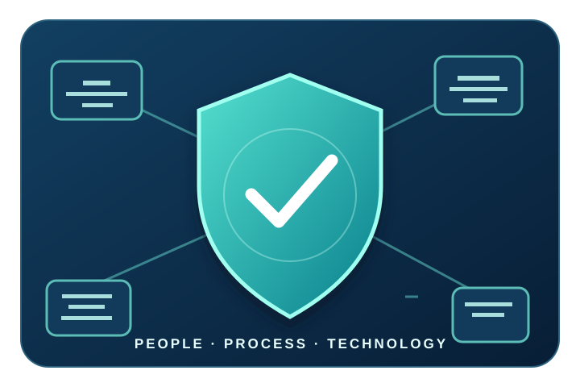
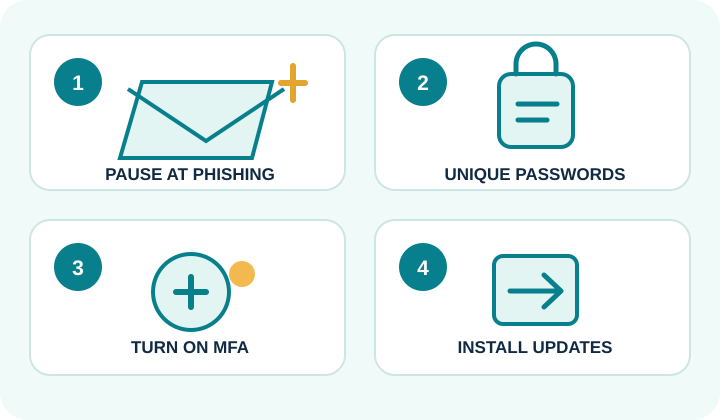

Protect information
Limit access to the people who need it, and keep private information private.
DIGITAL WORKPLACE READINESS · TOPIC 01
A beginner-friendly guide to protecting accounts, devices and information—and to the people and habits that make a workplace more secure.

THE BIG IDEA
Cybersecurity is the practice of protecting computers, networks, accounts and data from unauthorised access, damage or disruption. It combines people, processes and technology. A firewall helps, but careful decisions and clear recovery plans matter too (National Institute of Standards and Technology [NIST], 2024).
Limit access to the people who need it, and keep private information private.
Prepare backups and response plans so people can continue or safely resume work.
Protecting information helps organisations earn the confidence of staff, clients and partners.
A SIMPLE START
CISA recommends recognising and reporting phishing, using strong unique passwords, turning on multifactor authentication (MFA), and installing software updates (Cybersecurity and Infrastructure Security Agency [CISA], n.d.).

EXPLORE THIS WEBSITE
Follow the menu above, or choose a page below. Each topic connects to the next.
Definitions, features, benefits, challenges, a comparison table and a sample feedback form.
See how cybersecurity supports education, business, healthcare and daily life.
Reflect on your learning and explore trusted resources for your next steps.
Compare three roles and beginner-friendly learning pathways.
Visit group members' websites and return to the Group Portal.
Review the APA 7 references used across this website.